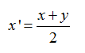
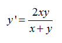

Trên bản đồ có một con robot đi tuần di chuyển theo quy tắc: nếu robot đứng ở ô (x, y) thì di chuyển sang ô (x', y'), trong đó:

Robot xuất phát tại ô (x, y)
Biết rằng có một rada trên bản đồ tại vị trí (0, 0) và có mức độ phủ sóng c, nghĩa là cứ mỗi giây rada sẽ quét một hình tròn bán kính c và phá hủy những gì nó quét được kể cả vật đó nằm ở rìa của hình tròn. Nhiệm vụ của bạn là xác định xem nếu robot di chuyển theo quy tắc trên thì có thể bị phá hủy bởi rada hay không.
Input
Dòng đầu chứa số nguyên T (1 <= T <= 106) là số lượng test.
T dòng tiếp theo, mỗi dòng gồm 3 số nguyên x, y, c (1 <= x, y <= 109, 1 <= c <= 106, x khác y)
Output
Nếu robot có thể bị phá hủy in ra DANGER, ngược lại in ra SAFE với mỗi test tương ứng